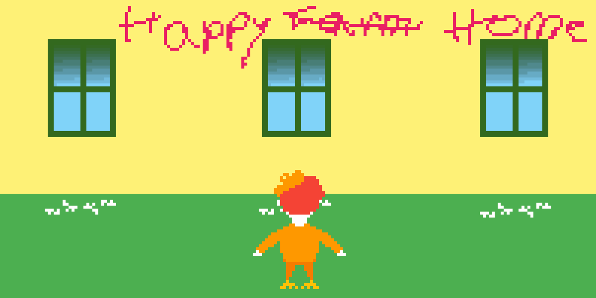

The Cafeteria

Your question is elegantly answered as the windows smoothly transform into doors, with hidden brooms taking care of the plates. Seems like this isn't the first time this happened.
Can I use the doors?